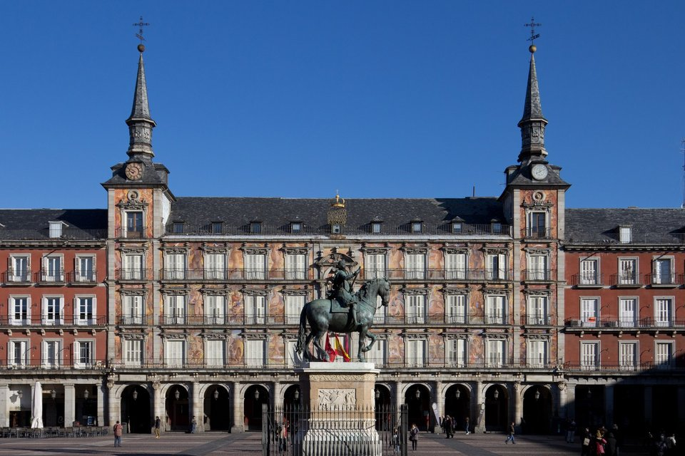

Spain · Madrid
Madrid old town walk audio guide
7 stops · 11 min
This guide is free
Every recorded stop plays here.
Stroll the Habsburg heart of Spain's capital from Kilometer Zero to the royal square. Seven stops weave together Madrid's bear-and-strawberry-tree emblem, historic market halls, the world's oldest restaurant, and the views beside Almudena Cathedral.
Stops
- 1
Puerta del Sol
Start at Puerta del Sol beside the Kilometer Zero plaque and the New Year's Eve clock tower.
Play0:00 / –:––Read along
This busy half-moon of a square is the Puerta del Sol, the "Gate of the Sun", the heart of Madrid and, officially, of Spain.
It takes its name from a gate in the fifteenth-century town wall that faced east, towards the rising sun, which is said to have decorated it. From the seventeenth to the nineteenth century this was where couriers arrived with news from abroad and from the rest of Spain, so Madrileños gathered here to hear, and spread, the latest gossip.
The red-brick building with the clock tower is the Real Casa de Correos, the old Post Office, built in the 1760s by the French architect Jacques Marquet; it is the oldest building on the square. Under Franco it was the headquarters of the security police, whose cells were notorious for the torture of opponents of the regime. It is now the seat of the president of the Madrid region. Plaques on its front honour the people of Madrid who rose against Napoleon's troops on 2 May 1808, and the victims of the train bombings of 11 March 2004.
On the pavement in front of its door is Kilometre Zero, the point from which Spain's six great radial roads have been measured since 1857. And every New Year's Eve, the whole country watches the clock above: as it strikes midnight, people eat twelve grapes, one for each chime, for luck in the year ahead, a tradition broadcast live since 1962.
On the east side stands the bronze Bear and the Strawberry Tree, the madroño, the symbol of Madrid, and in the middle the equestrian statue of King Charles III, nicknamed the "mayor-king" for his great public works.
- 2
Plaza Mayor
Step inside the arcaded Plaza Mayor, once stage for royal proclamations, bullfights, and markets.
Play0:00 / –:––Read along
This vast enclosed square is the Plaza Mayor, the main square of Habsburg Madrid, 129 metres long and 94 wide, framed by 237 balconies.
In the fifteenth century this was the Plaza del Arrabal, a market outside the walls. When Philip II made Madrid his capital, he asked Juan de Herrera to redesign it, but the square was built only under Philip III, by Juan Gómez de Mora, and finished in 1619.
The building with the two pointed towers and painted front is the Casa de la Panadería, the old bakers' house, from whose balconies the royal family watched events below. And there were many: markets, bullfights, canonisations, coronations and executions. On 30 June 1680 a great auto-da-fé of the Inquisition was held here, in which more than a hundred people were sentenced before a huge crowd; most of the accused were conversos, Christians of Jewish descent.
Fire swept the square three times, in 1631, 1670 and, worst of all, 1790. Juan de Villanueva, architect of the Prado, rebuilt it, lowering the buildings from five storeys to three and closing the corners with great arches, giving the uniform look of today. The paintings on the Panadería, mythological figures by Carlos Franco, date from 1992.
The bronze rider is King Philip III, cast in Florence by Giambologna and Pietro Tacca and given by the Grand Duke of Tuscany. It was moved here from the Casa de Campo in 1848.
The square's name has followed Spanish history: it has been the Plaza de la Constitución, the Plaza Real and the Plaza de la República, before settling on Plaza Mayor after the Civil War.
- 3
The Arco de Cuchilleros and Botín
Descend the steep steps of Arco de Cuchilleros toward Sobrino de Botín, open since 1725.
Play0:00 / –:––Read along
This steep arch and stairway is the Arco de Cuchilleros, the Cutlers' Arch, the most dramatic of the Plaza Mayor's gateways.
The square stands on higher ground than the streets to the south, so from this side the buildings are much taller: the arch drops several storeys, down to a street that curves along the line of Madrid's old town wall. The street was named after the cutlers, the knife-makers, whose workshops supplied the butchers of the square. The deep cellars in the houses below, many now taverns, are known as cuevas, caves.
A few steps down, at number 17 Calle de Cuchilleros, is Sobrino de Botín, a restaurant famous for roast suckling pig and lamb cooked in an old wood-fired oven. Guinness lists it as the oldest restaurant in the world, saying it was founded in 1725 by a French cook, Jean Botín. Historians have found a different story: the name comes from a pastry-maker nicknamed Botín, and his nephew, his sobrino, Cándido Remis, opened his own shop at this address in 1865, as "Sobrino de Botín". Either way, it is a very old house. Ernest Hemingway set the closing pages of his novel The Sun Also Rises at a Botín.
It is said that the young Francisco de Goya worked here washing dishes before he became a painter, a story the restaurant loves to tell but no document confirms.
- 4
Mercado de San Miguel
Browse the cast-iron and glass pavilion of Mercado de San Miguel, restored as a tapas market.
Play0:00 / –:––Read along
This elegant hall of iron and glass is the Mercado de San Miguel, opened on 13 May 1916.
The square it stands on was once home to the church of San Miguel de los Octoes, dating from the Middle Ages. The church was demolished in 1809, during the French occupation, and an open-air fish market took its place. It was so dirty that the city decided to cover it, and the architect Alfonso Dubé y Díez designed this hall, inspired by the famous iron market halls of Les Halles in Paris.
For most of the twentieth century it was an ordinary neighbourhood market. After decades of decline, private investors bought it in 2003, restored the ironwork and turned it into a gastronomic market in 2009, with more than thirty stalls of tapas, Iberian ham, cheeses, olives, oysters and wine.
- 5
Plaza de la Villa
Pause in quiet Plaza de la Villa, framed by Mudéjar towers and Madrid's seventeenth-century town hall.
Play0:00 / –:––Read along
This small, quiet square off Calle Mayor is the Plaza de la Villa, for centuries the seat of Madrid's city government, and home to some of the oldest buildings in the city.
The town council once met in the porch of the church of San Salvador, which stood here until 1842. Around the square, three buildings show three eras of Madrid. The plain brick Casa and Torre de los Lujanes, from the fifteenth century, is the oldest civil building in Madrid, with a Gothic doorway. Tradition says that the French king Francis I was held prisoner in the tower after his capture at the Battle of Pavia. The Casa de Cisneros, from the sixteenth century, has a richly carved Plateresque front. And the Casa de la Villa, the Habsburg-era town hall with its slate spires, was begun in the seventeenth century by Juan Gómez de Mora, the architect of the Plaza Mayor. It housed the city council until the twenty-first century, when the council moved to the Palacio de Cibeles.
The statue in the garden is Álvaro de Bazán, the admiral who fought at Lepanto in 1571 and was meant to lead the Spanish Armada before his death in 1588. The sculptor Mariano Benlliure made it for the three-hundredth anniversary of his death, and it was unveiled in 1891.
- 6
Almudena Cathedral
Look across the courtyard of Almudena Cathedral, consecrated only in 1993 opposite the Royal Palace.
Play0:00 / –:––Read along
This grey-and-white church facing the Royal Palace is Almudena Cathedral, Madrid's cathedral, and one of the youngest in Europe.
When Philip II made Madrid the capital in 1561, the Church stayed in Toledo, and for over three centuries the capital had no cathedral at all. The first stone was laid only in 1883. Francisco de Cubas planned a huge neo-Gothic church, with a neo-Romanesque crypt, but money ran short, the Civil War stopped the work, and the site lay abandoned. From 1950 the architect Fernando Chueca Goitia redesigned the exterior in a classical style to match the Royal Palace opposite. Pope John Paul II consecrated the cathedral in 1993, one hundred and ten years after it was begun.
It is dedicated to the Virgin of the Almudena, Madrid's patron saint. According to legend, her image was hidden in the town wall to save it from the Muslims, and rediscovered centuries later, in 1085, when part of the wall collapsed after King Alfonso VI took the city. The name comes from the Arabic word for the citadel. Some scholars believe the cathedral stands on the site of a medieval mosque.
In 2004 the cathedral hosted the wedding of the future King Felipe VI and Letizia Ortiz.
- 7
Plaza de Oriente
Finish among the limestone statues of Spanish kings in the gardens of Plaza de Oriente.
Play0:00 / –:––Read along
This formal garden square is the Plaza de Oriente, with the Royal Palace on one side and the Teatro Real, the opera house, on the other.
Its story begins with Joseph Bonaparte, Napoleon's brother and King of Spain, who had a tangle of medieval houses east of the palace demolished to open up a great square; Madrileños gave him the nickname "Pepe Plazuelas", "Joe Little-Squares". The layout seen today was designed in 1844 by Narciso Pascual y Colomer.
In the centre stands the bronze statue of King Philip IV on a rearing horse, a masterpiece by the Florentine sculptor Pietro Tacca, made between 1634 and 1640. Philip wanted a monument that would outshine his father's in the Plaza Mayor, so his minister, the Count-Duke of Olivares, demanded a horse rearing on its hind legs, a daring feat for a large bronze. Tacca worked from portraits sent from Madrid by Diego Velázquez. Tradition says Galileo Galilei advised him: make the back of the horse solid and the front hollow, so the weight rests on the hind legs, with the tail giving a little extra support.
Around the gardens stand limestone statues of early kings of Spain, from Visigothic times onwards. They belong to a series of all the monarchs of Spain, carved between 1750 and 1753 to line the top of the Royal Palace. Some were set up there, but there were fears the roof could not bear their weight, and they were taken down and spread around Madrid and other cities. Tradition says the real reason was a nightmare of Queen Elisabeth Farnese, in which the statues fell from the cornice onto the royal family.
On the map
All 7 stop pins for this guide are marked. Open map